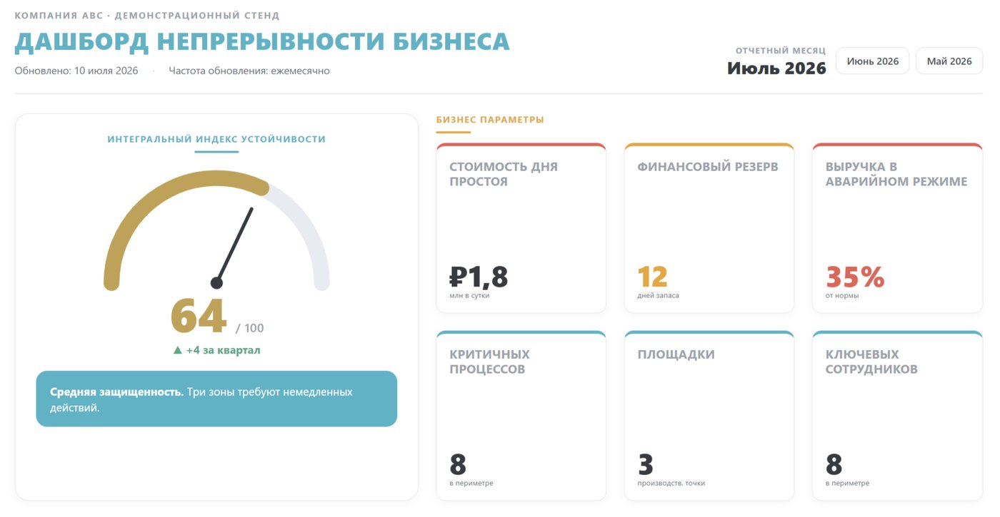

Знакомая ситуация?
Совет директоров задает вопрос — а ответить нечем: есть папка планов, но нет цифр.
Через квартал после внедрения планы устарели, учения не проводятся, никто не заметил.
Деградацию защиты видно только когда что-то уже сломалось и стоит денег.
Сколько стоит не видеть
Типичная стоимость дня простоя для среднего бизнеса — большинство компаний не считали свою.
Доля малых компаний, не возобновивших работу после серьезного сбоя (FEMA).
Реальное время восстановления часто в разы больше целевого — но об этом узнают во время аварии.
Слепота не лечится еще одним толстым отчетом. Нужен прибор, который показывает состояние постоянно.
Как выглядит дашборд
Это верхняя часть рабочего экрана — интегральный индекс устойчивости и бизнес-параметры. Визуализация для понимания, а не весь дашборд: ниже идут критичные процессы со светофорами, единые точки отказа, состояние планов и динамика по кварталам.

Что вы увидите на дашборде
Индекс устойчивости 0-100 и его динамика: одна цифра для разговора с советом.
Критичные процессы со светофорами: готовность, RTO/RPO, ответственные.
Единые точки отказа: один человек, один поставщик, один сервер, один ИИ-сервис.
Финансовая экспозиция: цена простоя и подушка на восстановление.
Покрытие BCP/DRP, дата пересмотра, когда были учения и что они показали.
Тренды по кварталам: где стало лучше, где началась деградация.
Кому и когда он нужен
Видеть устойчивость бизнеса так же, как выручку — без чтения планов.
Один экран вместо квартального отчета «у нас все нормально».
Единая картина вместо десятка таблиц; аргументы для бюджета.
Показать зрелость банку, бирже, тендеру, страховщику — цифрами.
Особенно вовремя, если впереди тендер или проверка регулятора, недавно случился инцидент, страховщик задает вопросы — или вы только что вложились в BCM и хотите, чтобы система жила.
Старт за дни, а не месяцы
Когда появится аппетит — подключим ваши системы напрямую (уровень «Интеграция»), и цифры будут обновляться без ручного ввода.
Уровни продукта
Excel-книга с методологией, движок, настройка под вашу структуру, обучение координатора, первый дашборд. Запуск за 2 недели.
Подключение к вашей витрине данных или системам (BI, ERP, ITSM): проектирование состава, маппинг, правила качества. Реализуется вместе с вашей ИТ-командой.
Мы сами собираем обновления, пересобираем дашборд и присылаем короткий комментарий эксперта: что изменилось и на что смотреть.
Стоимость зависит от масштаба и уровня — обсудим на демонстрации, когда примерим продукт на ваш бизнес.
Как устроен дашборд
Никакой сложной ИТ-системы: дашборд — это один HTML-файл, который собирает небольшой движок на Python. Движок работает целиком внутри вашего контура — на ноутбуке координатора, корпоративном сервере или в частном облаке. Данные не покидают компанию: наружу не уходит ни одной цифры.
Старт за дни, а не месяцы. На первом уровне источником данных служит Excel-книга, которую мы передаем вместе с дашбордом: на одном листе — форма с предвыбранными метриками, на втором — инструкция, что и как заполнять и с какой периодичностью. Наша методология уже внутри файла, поэтому не нужно месяцами решать, «что мерить» — координатор начинает заполнять форму с первого дня.
Уровень интеграции — когда появится аппетит. Если у компании есть витрина данных или системы-источники (BI, ERP, ITSM), движок подключается к ним и забирает показатели автоматически. Чаще всего новые данные создавать не нужно — мы помогаем переиспользовать те, что уже есть: проектируем состав витрины, маппинг и правила качества данных, а подключение выполняет ваша ИТ-команда.
История и тренды. При каждой пересборке движок сохраняет датированный снимок в легкую встроенную базу (SQLite) рядом с собой. Поэтому дашборд показывает не только текущее состояние, но и динамику: что улучшилось за квартал, где началась деградация.
Сопровождение — по желанию. Можно вести дашборд полностью самостоятельно, а можно подключить ежемесячный сервис: мы сами собираем обновления, пересобираем дашборд и присылаем короткий комментарий к изменениям.
Почему это не «еще один BI-отчет»
- Методология внутри. BI-команда полгода выясняет, что мерить. Здесь метрики непрерывности уже выбраны, определены и увязаны — заполняйте с первого дня.
- Не нужен ИТ-проект. Старт — без интеграций, серверов и закупок: Excel плюс легкий движок в вашем контуре.
- История и тренды из коробки. Каждая пересборка сохраняет снимок: видно динамику, а не только текущий срез.
- Живет после внедрения. Регулярное обновление и светофоры не дают системе непрерывности тихо умереть.
Покажем дашборд на примере вашей отрасли
30 минут онлайн, без обязательств: пройдем по живому дашборду, примерим метрики на ваш бизнес и честно скажем, взлетит ли это у вас. Нужны только имя и контакт.
Заказать демонстрациюУже готовы обсуждать проект? Напишите об этом в комментарии к заявке — начнем с деталей.
Частые вопросы
Нет. Движок и данные работают целиком внутри вашего контура — на вашем компьютере, сервере или в частном облаке. Наружу не уходит ни одной цифры.
С Excel-книги: методология внутри подскажет, что собрать. Если базовых данных нет совсем — соберем их вместе на экспресс-диагностике, это часть уровня «Старт».
Ваш координатор — это 1-2 часа в месяц по инструкции. Или подключите ежемесячный сервис, и обновлением займемся мы.
Обычно 2 недели от старта: настройка, заполнение формы, первая сборка и разбор результатов.
Нет. Это управленческий инструмент и методика — честно, без лишних обещаний.
Запросить демонстрацию или расчет
Оставьте имя и рабочую почту. Ответим в течение рабочего дня и предложим следующий шаг.
Предпочитаете переписку — Телеграм · info@risk-place.ru